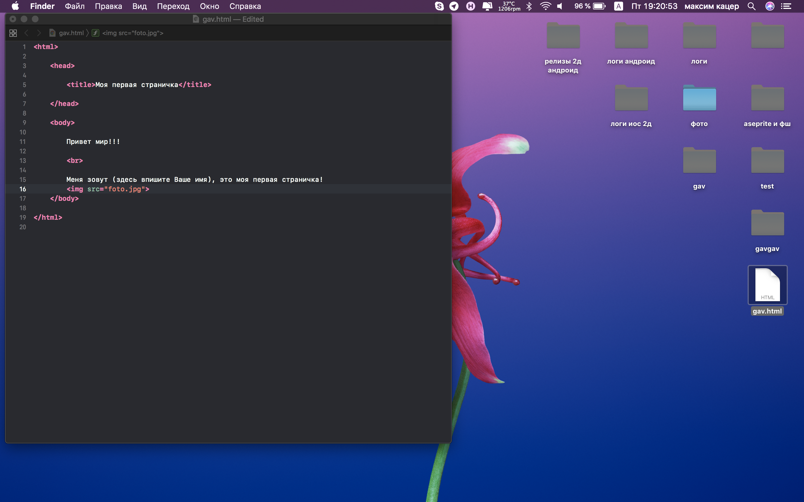

глобальный стиль
с регистром
другим регистром
глобальный стиль по-меньше
перечеркнутый текст
Первый параграф c первым стилем
второй параграф с другим стилем
третий параграф с третьим стилем
большая ячейка
ячейка по-меньше
Ссылка на 2 стр
Ссылка на стр с
видео и аудио
